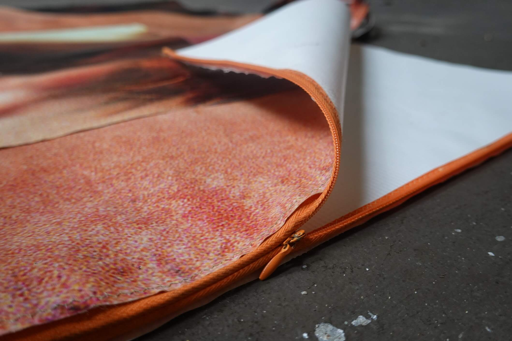
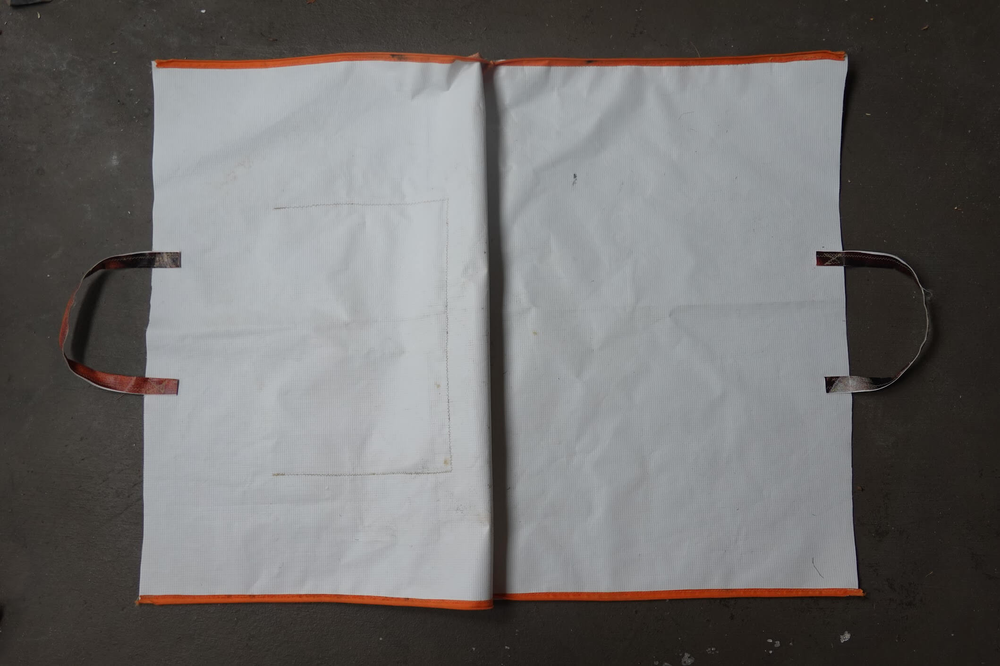
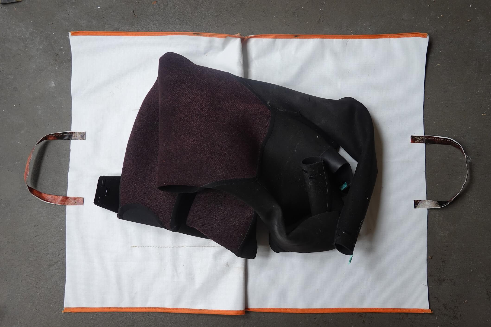
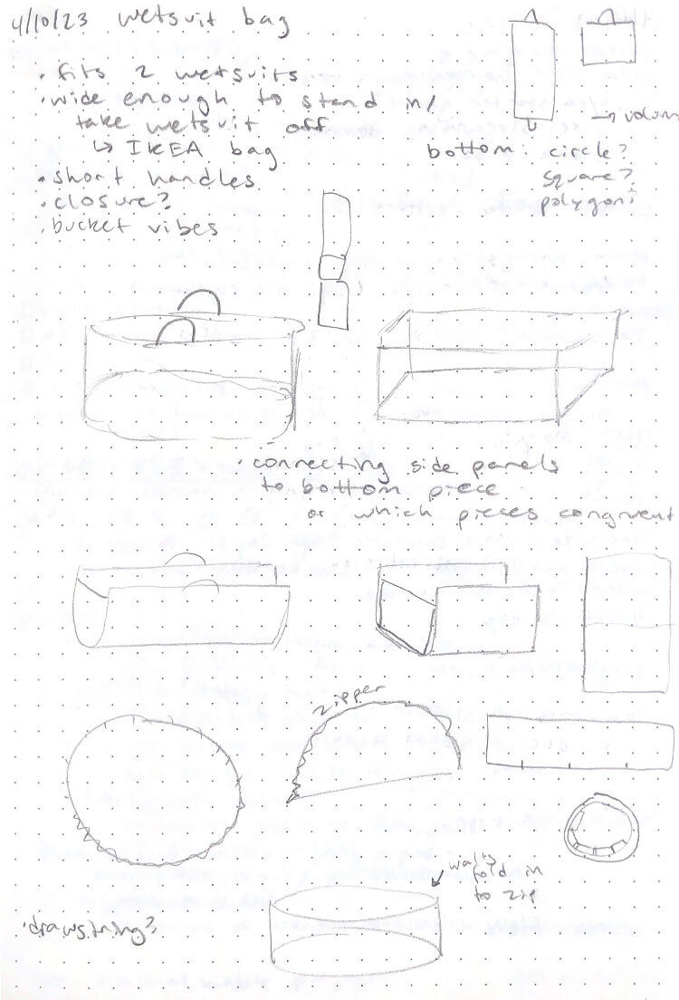
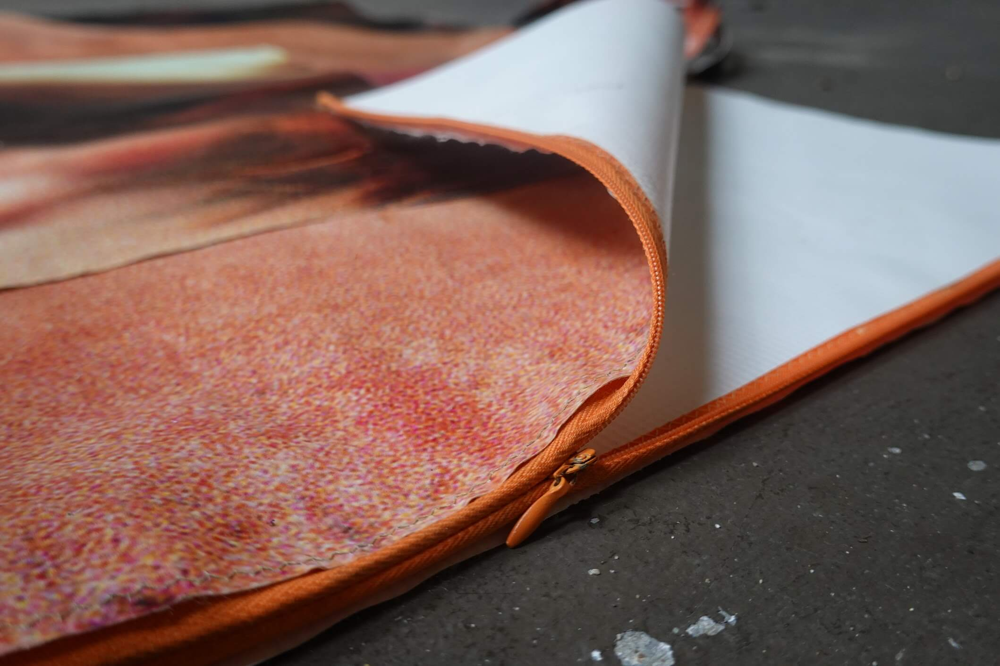
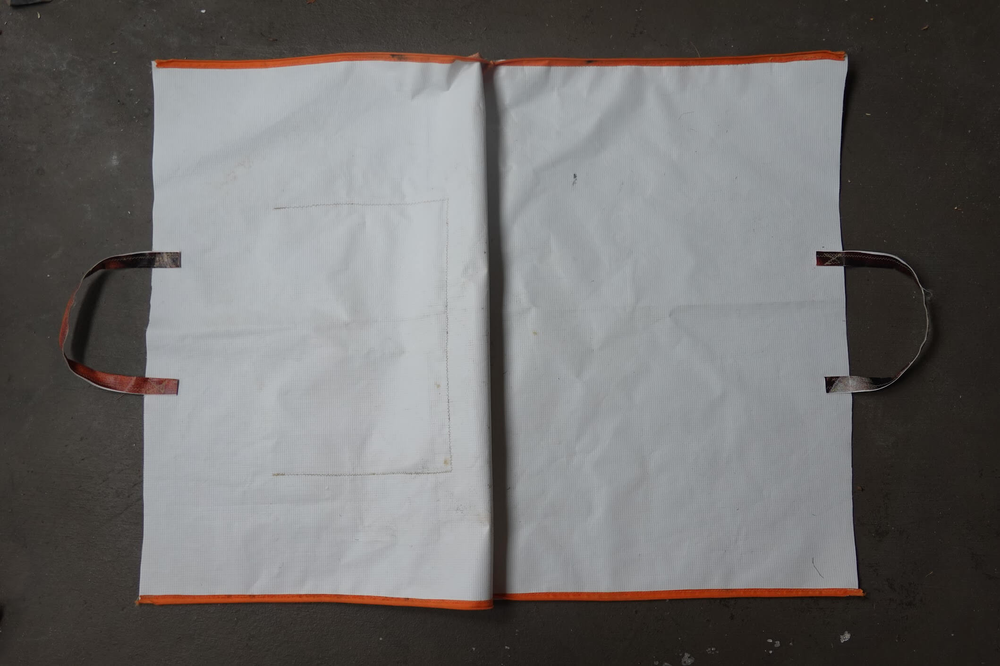
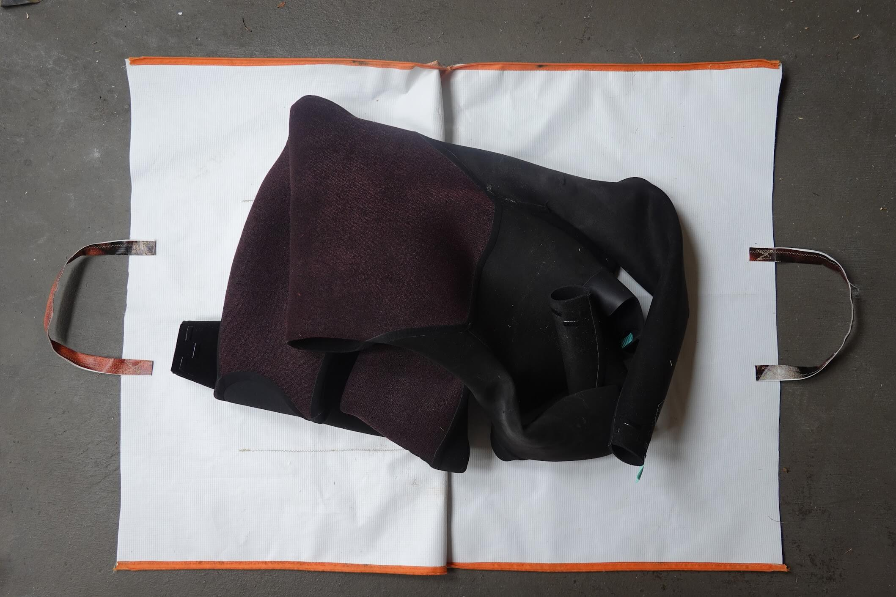
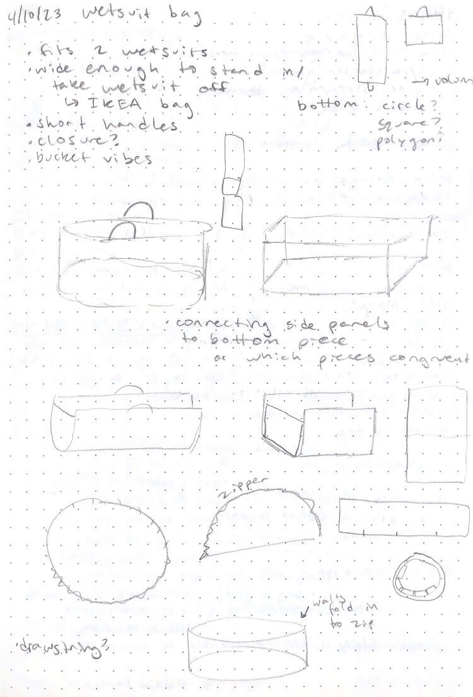
The creator in me saw a discarded promotional banner destined for the landfill and didn't think it was trash, but rather an opportunity to create a whole collection of technical bags and gear. I saw the potential in this tough, water-resistant, canvas-like texture and began to produce tote bags and wallets.
I soon leveled up and began to design technical gear for outdoor adventures.
I designed and sewed a custom insert to organize and protect climbing gear.
I also created a foldable, origami-inspired wetsuit bag that can transform into a changing mat.
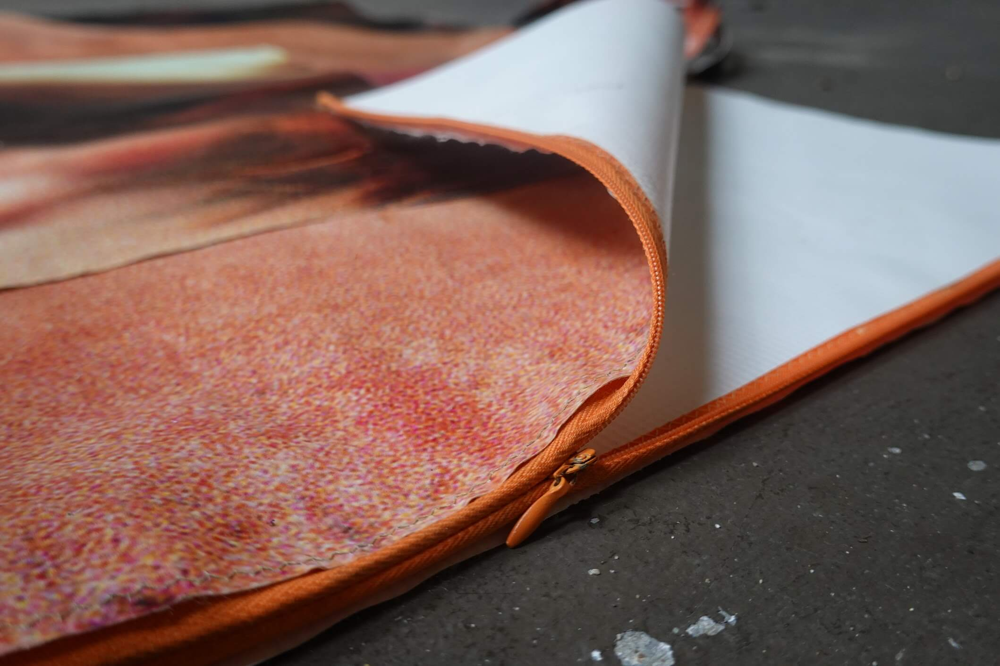
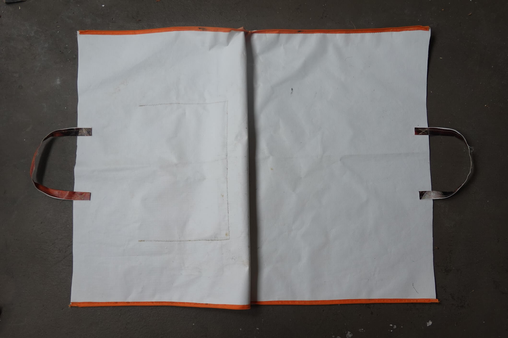
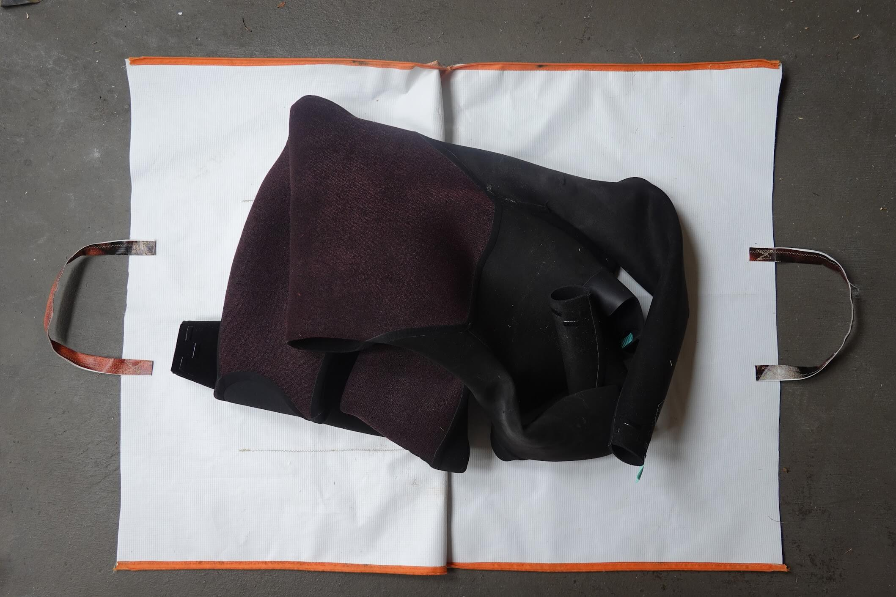
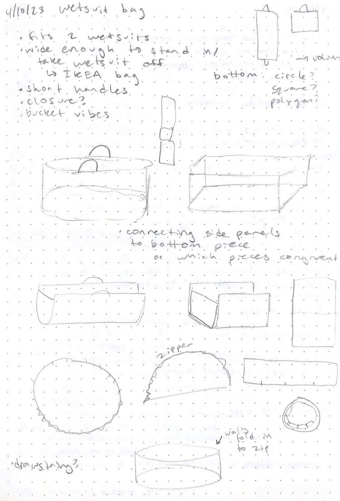